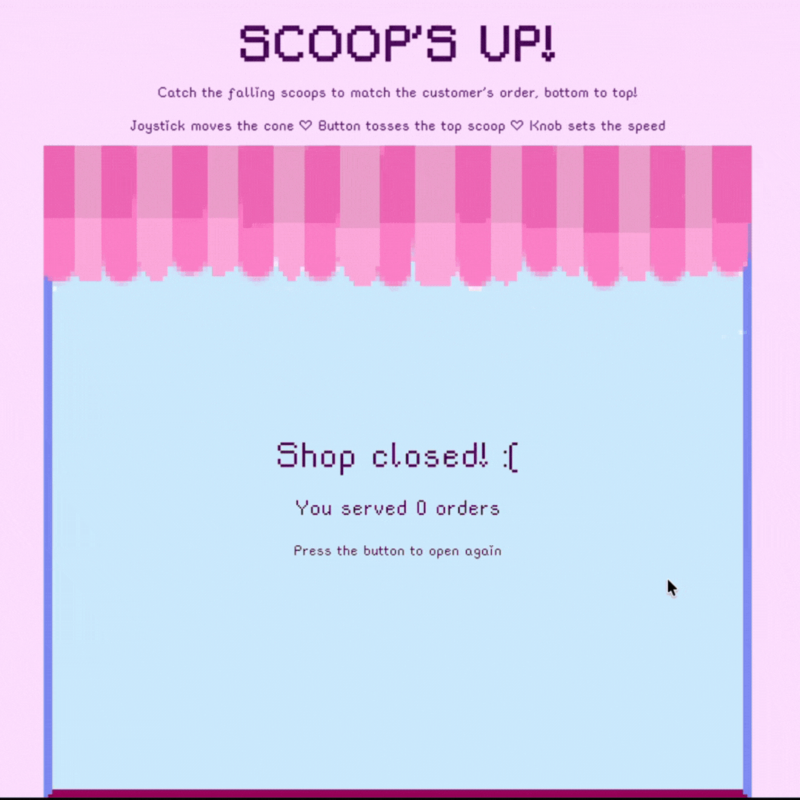

Scoop's Up
Summary
I built an ice cream stacking game where random scoops fall from the top of the screen, and the player has to move an ice cream cone left or right to catch the right flavors and build a customer's order from the bottom up. The scoops are drawn using random flavor values, and I used a potentiometer knob to control how fast the scoops fall. If you accidentally catch the wrong flavor, you can just press a button to toss the top scoop off the cone. The game displays everything next to a panel that tracks customer patience, order tickets, and your score. The game is over once 3 "customers" or order tickets are missed.
Inspiration & Motivations
This project was inspired by the Papa Louie: Burgerzilla mini-game and classic arcade games. I decided to switch from a burger theme to an ice cream shop because I really like the pastel aesthetic of ice cream. I also wanted to add an order element, which the original Burgerzilla game doesn't have, so I could incorporate the button mechanic and let players toss away mistakes when completing customer orders. Using an ESP32 joystick, knob, and button made it possible to translate physical controls into game mechanics for moving the cone, adjusting speed (and difficulty), fixing mistakes and starting over.
Technology & Hardware
For this project, I used a LILYGO T-Display (ESP32) board, a joystick, a potentiometer, a button, a breadboard, jumper wires, and a USB-C cable. I custom-drew and designed the entire ice cream shop background screen, the cone, and all the individual scoop flavors using Procreate to give the game a pixel-art style. To wire everything together on the breadboard, I connected the joystick's GND to GND, its +5V pin to the ESP32's 3V pin, and its VRx and VRy pins to pins G32 and G33. The potentiometer's outer legs connected to 3V and GND with its middle leg hooked up to pin G37, while the button was wired with one leg running to pin G25 and the other to GND. The ESP32 acts directly as a controller. The microcontroller code (ice_cream_esp32.ino) reads the joystick, potentiameter, and button about 50 times a second and sends them to the laptop as a single line of text formatted as joyX,joyY,pot,button. The web game (sketch.js) reads these lines in Chrome using the Web Serial API, translating the data in real time to move the cone, set the fall speed, and handle button presses.
How It Came Together

Design Recommendations & Next Steps
Next time, I want to refine the gameplay logic, so instead of having the potentiometer just control speed, I could use it to scale overall difficulty by adding more ice cream flavors and decreasing customer patience over time. Since the game is a bit difficult right now, I can also improve the scoop generating system so it isn't purely random, guaranteeing that every order ticket is actually possible to complete. As for the physical set up, now that I know how to use the ESP32 to simulate a game controller, It’d be cool to design and 3D print a small handheld controller box to house the ESP32, joystick, knob, and button, making the setup more portable and easier to play with.